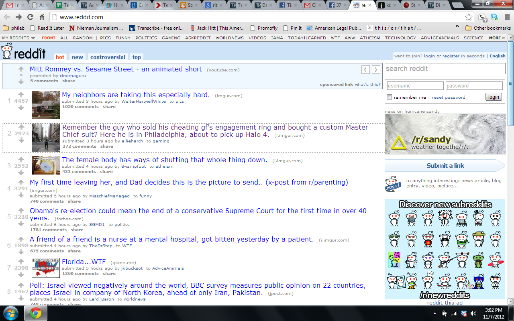
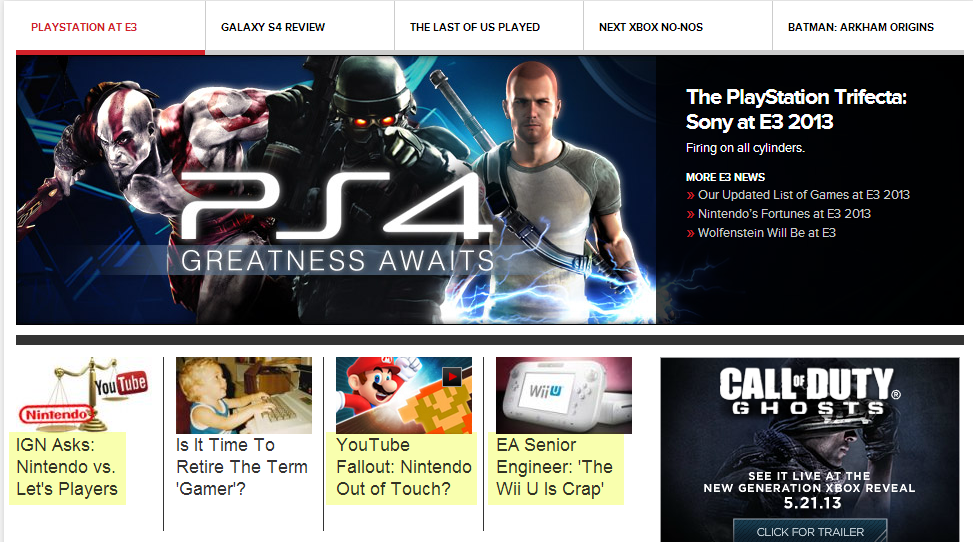

ESPN is the worldwide leader in sports and their website is probably one of the best in the world at providing the maximum amount of spots information in one page, all while remaining very aesthetically pleasing and leaving room for them to wrap advertising backgrounds on the site without taking away from its overall appeal. The user experience is phenomenal. The jumbotron in the middle provides the biggest stories of the day, or you can use the tabs near the top to quickly get detailed information about a particular sport or team.
Reddit's signature is it's simple and minimalist design. There isn't a whole lot going on on the page from a design stand point, it is just maximized to provide the most amount of links to the user. Users can go to the top links to quickly go into a subreddit of choice
IGN's design is somewhat similar to ESPN.com, in that it provides a giant jumbo-tron front and center on the main page that shows the user the top videogame stories of the day. It also has breakout tabs near the top so that a user can quickly find information on a specific game or video game system. The biggest difference is IGN's blog like way of presenting additional news stories. The user can continually scroll down the page to view stories posted by the editors there.